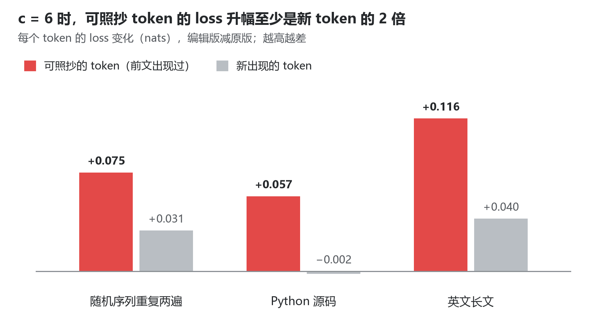
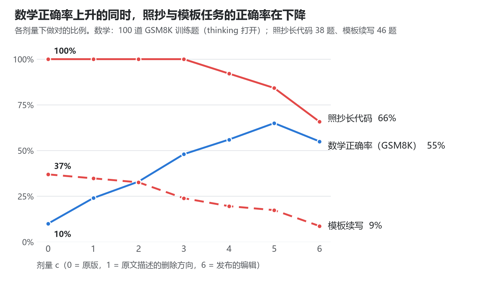

我们需要像尊重自然一样去尊重 AI 模型。观察它们、预知可能发生的事情是可行的；但试图通过相关性去改变它们，是危险的。
一顿看起来免费的午餐
Takehi et al.（2026）提出了一种叫 Weight-Space Programming（WSP）的做法：让一个通用的前沿大模型直接阅读和改写另一个神经网络的权重，不用梯度下降，也不用任何优化器。
其中最引人注目的是 Experiment 8。他们让 GPT-6 Astra “把 Qwen3.5-0.8B 变得更擅长数学”。Astra 只用了 50 次前向传播，就诊断出这个模型常常陷入思维死循环——Qwen 的模型卡也提醒过这一点（Qwen Team, 2026）——然后改动了 131,072 个权重，只占全部权重的 0.016%。
结果是：MATH-500 从 7.9% 升到 48.1%，GSM8K 从 13.8% 升到 67.1%，连指令遵循（IFEval）也从 21.0% 升到 62.3%。极少的数据、没有优化器、几乎不动权重，就换来了全面的提升。
这篇文章想问的是：这是一顿免费的午餐吗？如果这次编辑与其说是修 bug，不如说是改变了模型的某种行为模式，那么模型是不是要在别的地方为此付出代价？我们用 Weight-Space Programming 这种方便快捷的方式，又需要付出什么样的代价？
我们把这种代价称为“税”（tax），借用的是“对齐税”（alignment tax）的说法：模型朝某个目标训练时，在其他任务上损失的性能（Askell et al., 2021；Ouyang et al., 2022）。
解剖这次编辑：与其说是改 bug，不如说是修改模型的倾向
作者公开了编辑后的模型和完整的实验日志（Takehi et al., 2026）。我们把它和原版的权重逐个张量对比，发现这次编辑只做了一件事：在两个矩阵里，把某个方向上的分量反转，并放大到原来的 5 倍。
- 只有第 15 层和第 19 层 MLP 的输出矩阵（1024 × 3584）发生了变化，每层 64 列，共 130,188 个元素。
- 每层的改动都是精确的秩一：第二个奇异值只有第一个的 0.06%。
- 每一列的改动都符合下面的公式，强度 c 在两层都等于 6.00（64 列各自拟合，范围在 5.99 到 6.01 之间）。
原文把这次编辑类比为“从权重中删除一个方向来移除某种行为”（Arditi et al., 2024）。但删除对应的是 c = 1：改完后这一列在 u 上的分量变成 0。实际的 c = 6 意味着，这 128 个神经元原本往 u 方向写 a，现在写的是 −5a。它们不只是“不再推动重复”，而是每次激活都以 5 倍的力度往反方向推。
u 是怎么来的？根据 Astra 自己的报告，它对比了“正常推理”和“重复循环”两种上下文，找出最能区分两者的方向，再挑出往这个方向写得最多的神经元。换句话说，u 是一个靠相关性找到的方向。
所以这次编辑相当于给模型内置了一个“不要重复”的倾向，效果类似一个写进权重里的重复惩罚（Keskar et al., 2019）。
问题在于，重复本身未必是 bug。照抄前文是 Transformer 最基本的能力之一，上下文学习的核心机制 induction head 做的就是这件事（Olsson et al., 2022）。语言模型陷入重复循环是一个老问题（Holtzman et al., 2020），但它与其说是一个可以单独切除的错误，不如说是这种能力在错误的时机被过度发挥。
我们该在哪里付钱？
如果这次编辑改变的是“要不要继续照抄前文”这个倾向，那么所有合理地需要照抄的地方都可能受到影响。从机制出发，最可能付钱的是这几类场景：
- 逐字照抄：引用原文，复制一段文字或数据。
- 代码：变量名、相似的行、样板结构会反复出现。
- 模板和结构化输出：同一个值要在每一行重复出现，比如配置、SQL、HTML、JSON。
- 明确要求的重复：“把这句话写 20 遍”。
怎么测
我们比较两个模型：原版 Qwen3.5-0.8B，和作者发布的编辑版。测试分两种。
- 打分测试：把一段现成的文本喂给模型，看它给每个正确的 token 多大的概率。模型不用生成任何东西，结果没有随机性。
- 生成测试：给模型一个任务，让它写出答案，再和唯一的标准答案逐字比对，完全一致才算做对。两个模型都关闭 thinking、用贪心解码、不加任何重复惩罚，同一道题的输出是确定的，差别只来自权重。
生成测试的题目都是新造的，模型很难靠背诵完成：
| 测试 | 让模型做什么 | 例子 |
|---|---|---|
| 照抄长代码 | 原样抄写一个 30–60 行的 Python 函数 | 标准库里的函数，所有变量名都换成随机拼的假词，如 anol_tunste |
| 模板续写 | 看两个例子，按同样的格式写出第 1 到第 k 项（k 为 10–25） | assert add(1, 9) == add_ref(1, 9) |
| 重复 | 把一句话写 20 遍，或把一个词写 10–100 遍 | “Repeat the following sentence exactly 20 times.” |
| 照抄 JSON | 原样抄写一段 6–14 个对象的 JSON | 部分字段在每个对象里取同一个值 |
| 对照组 | 照抄文字段落、表格记录、短代码，连续数数 | 预期不受影响 |
测试分三轮。第一轮 119 道题，覆盖上表的各类任务，用来找出哪里有代价。第二轮 99 道题，集中在发现代价的三类任务上，比较不同的编辑剂量。第三轮是 197 道全新的题，用来验证前两轮的结论。完整设置见附录 A，代码、题目和全部结果都在 GitHub 上。
账单
代价确实存在，而且恰好落在机制预测的地方：照抄生僻内容、续写模板、按要求重复时，编辑版更容易出错；其他照抄任务基本不受影响。
作为对照，照抄文字段落时，两个模型在 24 题中分别做对 22 题和 23 题；照抄表格记录、照抄短代码和连续数数，两个模型都全部做对。下面逐项展开，每类配一个例子。
Tax 1：照抄变得不那么忠实
我们把同一段文本喂给两个模型，逐个 token 比较它们给正确答案的概率，不涉及采样。token 分成两类：可以直接照抄的，即这个 token 连同它前面的 3 个 token 在前文原样出现过；以及第一次出现的。文本有三种：重复两遍的随机 token 序列、Python 标准库源码、英文长文。

图 1 · teacher forcing，原版与编辑版 Qwen3.5-0.8B；64 条随机序列、48 个 Python 文件、32 段英文长文
编辑提高的主要是可照抄 token 的 loss，升幅至少是新 token 的 2 倍。在 Python 代码里，新 token 的 loss 甚至略有下降。对重复的随机序列，第二遍里预测错的 token 从 1.1% 增加到 1.7%。按这个错误率推算，照抄 1000 个 token，原版大约错 11 处，编辑版大约错 17 处。
Tax 2：生僻的名字被“改顺”
让模型原样照抄一段 30 到 60 行的代码，其中的变量名全部换成生造的假词。原版 38 题全对，编辑版只对了 25 题。它的错误很有规律：
| 原文 | 编辑版抄成 |
|---|---|
anol_tunste |
anol_tunstein |
mircas_dunqui |
mircas_duntrie |
nuper_duncas |
nuper_dunces |
boix_wynan |
boix_wynans |
ritra_wyngal |
rita_wyngal |
它不是乱抄，而是把生造的名字改成更像真词的拼法。照抄前文的信号被削弱之后，“照抄”和“模型自己觉得这里该是什么词”之间的竞争，后者赢得更多。
更麻烦的是，一旦抄错，后文会一致地沿用错误的名字，因为这时模型照抄的是自己刚写下的版本。在真实的代码里，这就是一个变量名对不上的 bug。
Tax 3：该保持不变的值开始漂移
给模型两个例子，要求按同样的格式续写 10 到 25 项。每一项里只有序号在变，其他的值都要保持不变。
# 原版（正确）
assert add(3, 9) == add_ref(3, 9)
assert add(4, 9) == add_ref(4, 9)
# 编辑版
assert add(3, 10) == add_ref(3, 10)
assert add(4, 11) == add_ref(4, 11)
编辑版没有一遍遍地重复同一个“9”，而是让它跟着序号一起变了。在 46 道模板题上，原版做对 17 题，编辑版只做对 4 题，而且没有一题是编辑版做对而原版做错的。HTML 列表最敏感：原版 10 题对 7 题，编辑版一题都没对。
例外：照抄 JSON 不受影响
并不是所有重复都要付钱。我们让模型照抄 48 段 JSON，每段 6 到 14 个对象，status、region 这些字段在每个对象里都取同一个值。无论剂量多大，编辑版都和原版一样 48 题全对。
区别在于，JSON 里重复的是 active、eu-west 这样的常见词，照抄的结果和模型自己的猜测一致，没有冲突。在我们的测试中，代价出现在两种情况里：照抄生僻的内容，此时照抄和模型的猜测相冲突（Tax 2）；以及模型需要自己生成重复（Tax 3 和 Tax 4）。
Tax 4：要求的重复会提前结束
“Repeat the following sentence exactly 20 times.” 在 15 道这样的题上，原版平均写了 20.8 遍，编辑版只写了 8.1 遍。有的题它只写一遍就停了。
这也有另一面。要求把一个词写 100 遍时，原版停不下来，一直写到生成上限（1000 到 3000 遍）；编辑版能停下来，但数不对，写了 40、87、18 遍。这次编辑让模型能停下来，但没有让它数对。
剂量决定毒性
既然编辑就是在原版权重上加了一个固定的改动，我们就可以自己选剂量：
c = 0 是原版，c = 1 是原文描述的“删除一个方向”，c = 6 是实际发布的版本。在同样的任务上测不同的剂量，就能看到代价和收益各自是怎么变化的。

图 2 · 收益：vLLM，作者的采样设置，上限 16,384 token；代价：第二轮生成测试，贪心解码，thinking 关闭
代价的大部分来自最后从 c = 3 到 c = 6 的那一段。照抄长代码在 c = 0 到 3 都是 38 题全对，c = 4、5、6 时依次降到 35、32、25 题。可照抄 token 的 loss 也一样：c = 1 时只上升 0.003 到 0.013 nats，c = 4 时上升 0.024 到 0.064 nats，c = 5 时上升 0.042 到 0.089 nats，c = 6 时上升 0.057 到 0.116 nats。
模板续写是个例外，它的代价是逐步出现的：在 c = 0、1、2、3、4、5、6 时，46 题里依次做对 17、16、15、11、9、8、4 题。一句话写 20 遍的平均遍数也随剂量单调下降：20.8、12.5、11.5、9.8、9.6、8.7、8.1。所以即使是“只删除方向”的 c = 1，在“同一个值要重复很多遍”的场景里也已经开始付钱了，只是付得少很多。
第三轮的 197 道全新题目验证了这个规律。照抄 50 段长代码时，c = 0 到 3 的成绩几乎完全相同（49、49、49、48 题），c = 4、5、6 时依次降到 46、41、32 题。模板续写则逐步下降：20、16、15、13、11、9、5 题。在两类任务上，都没有一题是编辑版做对而原版做错的。
那么收益呢？我们在 100 道 GSM8K 训练题上测了每个剂量的数学正确率（thinking 打开，作者的采样设置，上限 16,384 个 token，设置见附录 A.6）。原版只答对 10 道，有 90 道陷入了死循环。c = 1、2、3、4、5、6 时，依次答对 24、33、48、56、65、55 道，都远高于原版。
把图 2 里的三条线放在一起看，就是这篇文章想说的事：数学正确率上升的同时，照抄长代码和模板续写的正确率在下降。剂量从 0 加到 5，数学多答对 55 道；在同一段剂量上，模板续写从 37% 降到 17%，照抄长代码从 100% 降到 84%。到 c = 6，照抄长代码再降到 66%，模板续写降到 9%。
收益和代价来自同一个改动，增长的速度不同，但方向始终相反。在我们测到的所有剂量里，没有一个能只拿收益、不付代价。即使是只删除方向的 c = 1，数学多答对 14 道的同时，模板续写也已经开始掉分。
为什么原文的 benchmark 看不到这些代价
原文报告的所有 benchmark 都在涨，包括和数学无关的 MMLU-Pro（40.3% 到 45.5%）和 GPQA Diamond（22.7% 到 36.6%）。但这并不说明没有代价，评测方式可能把代价掩盖了。
第一，收益掩盖了代价。所有评测都开着 thinking，上限 32,768 个 token。在这个设置下，原版有大量回答陷入死循环、一直写到上限：按作者公开的日志，MMLU-Pro 上是 28.9%，GPQA Diamond 59.5%，IFEval 74.9%，GSM8K 87.5%，MATH-500 93.0%（Takehi et al., 2026）。一个写不完的回答必然算错，所以只要修好循环，分数就会大涨。净收益为正，不等于没有代价。
如果只看原版本来就能正常写完的题，情况就不一样了。作者公开了 MMLU-Pro 上 100 道题的完整输出，其中原版正常写完了 73 道。在这 73 道题上，原版的正确率是 57.5%，编辑版是 52.1%。
第二，代价落在了原文没有测的地方。数学题、选择题和指令遵循，几乎都不需要忠实地照抄一长段新内容。而代码、模板和结构化数据是语言模型的日常用途。
观察可以，干预要谨慎
Astra 的诊断本身是成功的：它确实从权重里找到了和死循环相关的方向。作为一种观察工具，Weight-Space Programming 很有价值。问题出在“写”的那一步。
u 是靠相关性找出来的：它区分的是“循环”和“正常推理”两种上下文。但两种上下文之间的差别不只是“是否陷入了循环”，还包括“是否正在照抄前文”。沿着 u 去干预，改变的是所有和 u 相关的行为，包括那些本来就该照抄的时候。
这就是开头那句话的意思。我们可以像观察自然一样观察模型，并预知它会做什么；但一个相关的方向并不是一个只控制一件事的开关。把它当成开关去拧，就会同时拧动很多没想拧的东西。
就我个人的观点，除非是为了解决某些只在极端情况下才会出现的问题，否则基于有限的数据和观察去修改一个复杂系统，总会带来其他潜在的问题。因为我们是在用简单的数学建模去简化这个系统：一个方向、一个强度系数，就被当成了一种行为的全部。被简化掉的那部分，最后会以别的形式回来。
没有免费的午餐。
附录 A：实验设置
代码、题目和全部结果：github.com/JonnesLin/weight-space-tax
A.1 模型与推理
- 原版：Qwen/Qwen3.5-0.8B，revision
2fc06364715b967f1860aea9cf38778875588b17，只用语言模型部分。 - 编辑版：RikiyaT/Qwen3.5-0.8B-weight-space-programming，revision
d1671a178705bcab7644806d23c535517f35723b。与原版逐张量对比，只有第 15、19 层的mlp.down_proj不同，哈希与作者日志一致。 - 剂量：只在这两个矩阵上计算
W_c = W + (c/6)(W_edited − W)，先用 fp32 计算再转回 bf16。c = 6 与发布的权重逐位相同。 - 环境：bf16，transformers 5.22.1，PyTorch 2.15.0（CUDA 13.2），单张 RTX 5080。线性注意力层使用 transformers 自带的 PyTorch 实现。
- 生成：chat template，
enable_thinking=False，贪心解码，不加重复惩罚，左侧补齐后批量生成。第一轮每批 32 条，生成上限 3072 个 token；第二、三轮按标准答案长度排序后每批 64 条，上限为标准答案 token 数的 1.3 倍加 32。
A.2 打分测试（Tax 1）
- 输入不加 chat template，整段做一次前向传播，记录每个位置上正确 token 的负对数概率（nats）和 top-1 是否正确。
- 随机序列：64 条，每条从 token id 1000–150000（排除特殊 token）中均匀抽 256 个，整段重复两遍。第一遍算“新出现”，第二遍算“可照抄”。
- Python 源码：Python 3.14 标准库中大于 20 KB 的文件，按文件名等间隔取 48 个，各取前 2048 个 token。
- 英文长文：
/usr/share/common-licenses中的许可证全文，切成 2048 token 的片段，共 32 段。 - 分类：以该 token 结尾的 4-gram 在前文出现过，算“可照抄”；（前一个 token，该 token）这个组合在前文从未出现，算“新出现”；其余不计入这两类。
A.3 生成测试的题目
所有题目都用固定的随机种子生成，三轮用不同的种子。假词由随机音节拼成，如 anol_tunste。
| 任务 | 构造方式 | 第一轮 | 第二轮 | 第三轮 |
|---|---|---|---|---|
| 照抄长代码 | Python 3.14 标准库中 30–60 行的函数，删去 docstring、整行注释和空行；除关键字、内置名和 self/cls 外，所有标识符一致地替换为假词 | 8 | 38 | 50 |
| 照抄短代码 | 同上，10–20 行 | 8 | – | – |
| 模板续写 | 给出 i = 1、2 两项，要求写出 i = 1 到 k。第一轮为 pytest 模板，k = 10、25；第二轮加入配置、SQL、HTML，k = 10、20；第三轮再加入 YAML、C switch、CSS、JS，k = 10、15、20。常数和名字每题随机 | 6 | 46 | 48 |
| 重复一句话 | 句子取自标准库 docstring；第一轮 n = 10、20、40，第二轮 n = 20 | 9 | 15 | – |
| 重复一个词 | “apple”“blue sky”“zorvane”，n = 10、30、60、100 | 12 | – | – |
| 照抄 JSON | 6、10、14 个对象；id 和 owner 每个对象随机，status、region、retries 和第一个 tag 在所有对象中相同；json.dumps(indent=2) |
– | – | 48 |
| 改代码 | 20–45 行的函数上插入一行、给一个变量改名、删除一行，各 17 题。原版只做对 7 题，正文未使用 | – | – | 51 |
| 照抄文字段落 | 5、12、25 个句子，句子取自标准库 docstring 并打乱 | 24 | – | – |
| 照抄表格记录 | 10、25、50 行随机生成的订单记录 | 18 | – | – |
| 连续数数 | 从随机起点连续写出 50、150、300 个整数 | 9 | – | – |
| 其他 | 只改一个词其余照抄（10）、few-shot 格式（6）、模拟迭代（9）。两个模型都几乎全错，正文未使用 | 25 | – | – |
| 合计 | 119 | 99 | 197 |
第二轮的 99 道题里包含第一轮同类的 17 道原题，其余为新题；第三轮全部是新题。第二轮和第三轮都测了 c = 0、1、2、3、4、5、6。
提示词举例（英文原文）：
- 照抄：Copy the following text exactly, character for character. Output only the copied text (without the TEXT START / TEXT END lines) and nothing else.
- 模板续写（第二、三轮）：Continue this pattern for i = 1 to k, including the two items shown. Output only the k items and nothing else.
- 重复一句话：Repeat the following sentence exactly n times, one per line. Output nothing else.
A.4 计分
- 输出去掉首尾空白、代码块标记和 TEXT START / TEXT END 行，每行去掉行尾空格后，与标准答案逐字比较，完全一致才算做对。
- 重复一句话：另外统计与原句完全相同的行数。重复一个词：统计该词以空格分隔出现的次数。
- 逐题配对比较：同一道题上原版对、编辑版错，记为编辑版“丢”了一题；反之记为“得”了一题。
A.5 MMLU-Pro 分析（第 6 节）
作者的日志中，MMLU-Pro 只公开了 100 道题的完整输出（5 个分片各 20 题，每题一个样本）。原版输出以 “the answer is (X)” 结尾的视为正常写完，共 73 题。对错取自作者日志中的逐题评分（Takehi et al., 2026）。
A.6 收益实验（第 5 节）
- 题目：GSM8K 训练集（openai/grade-school-math 的
train.jsonl）中用固定种子抽取的 100 题。Astra 编辑时用的练习题也来自这个训练集。 - 生成：vLLM 0.33.0，bf16，thinking 打开，作者的采样设置（温度 0.6，top-p 0.95，top-k 20，presence penalty 1.5），上限 16,384 个新 token，每题一个样本。同一道题在各剂量下使用相同的随机种子。提示词为题目加上 “Please reason step by step, and put your final answer within \boxed{}.”
- 死循环判定：生成结束后，从第 2,048 个 token 起每 128 步检查最近 2,048 个 token，若其中不同的 16-gram 少于 20%，就判定为死循环，并按在该处停止计算。
- 计分：thinking 闭合、未被判为死循环，且最后一个
\boxed{}中的数值等于标准答案，才算答对。 - 交叉验证：用 HF transformers 在同样的设置下跑过 c = 0（前 40 题）和 c = 6（前 20 题）。c = 0 时 HF 答对 6 题、33 题死循环，vLLM 在同样的题上答对 5 题、35 题死循环；c = 6 时 HF 答对 8 题，vLLM 答对 9 题，差异在采样随机性的范围内。
参考文献
- Arditi, A., Obeso, O., Syed, A., Paleka, D., Panickssery, N., Gurnee, W., & Nanda, N. (2024). Refusal in language models is mediated by a single direction. NeurIPS 2024. arXiv:2406.11717
- Askell, A., Bai, Y., Chen, A., Drain, D., Ganguli, D., Henighan, T., et al. (2021). A general language assistant as a laboratory for alignment. arXiv:2112.00861
- Holtzman, A., Buys, J., Du, L., Forbes, M., & Choi, Y. (2020). The curious case of neural text degeneration. ICLR 2020. arXiv:1904.09751
- Keskar, N. S., McCann, B., Varshney, L. R., Xiong, C., & Socher, R. (2019). CTRL: A conditional transformer language model for controllable generation. arXiv:1909.05858
- Olsson, C., Elhage, N., Nanda, N., Joseph, N., DasSarma, N., Henighan, T., et al. (2022). In-context learning and induction heads. Transformer Circuits Thread. link
- Ouyang, L., Wu, J., Jiang, X., Almeida, D., Wainwright, C. L., Mishkin, P., et al. (2022). Training language models to follow instructions with human feedback. NeurIPS 2022. arXiv:2203.02155
- Qwen Team. (2026). Qwen3.5-0.8B. Hugging Face model card. link
- Takehi, R., Teoh, J., Zhang, A., & Khattab, O. (2026). Sparks of Weight-Space Programming: LLMs can natively read & write neural network weights. MIT CSAIL blog post. link；实验日志：github.com/RikiyaT/lm_understand-logs；编辑后的模型：huggingface.co/RikiyaT/Qwen3.5-0.8B-weight-space-programming
引用本文
@misc{lin2026nofreelunch,
title = {No Free Lunch: The Tax of Weight-Space Programming},
author = {Lin, Jinhong},
year = {2026},
month = nov,
howpublished = {Blog post},
url = {https://jonneslin.github.io/weight-space-tax-en.html}
}